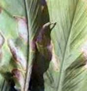
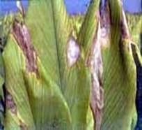

| Home |
| TURMERIC |
MAJOR DISEASES |
| 1. Rhizome Rot |
| 2. Leaf Spot |
| 3. Leaf Blotch |
MINOR DISEASES |
| 4. Dry rot |
| 5. eaf spot |
| 6. Leaf Blight |
| 7. Brown rot |
| Questions |
| Download Notes |
TURMERIC :: MAJOR DISEASE :: LEAF SPOT
Leaf Spot - Colletotrichum capsici
Symptoms
Oblong brown spots with grey centres are found on leaves. The spots are about 4-5 cm in length and 2-3 cm in width. In advanced stages of disease black dots representing fungal acervuli occur in concentric rings on spot. The grey centers become thin and gets teared. Severely effected leaves dry and wilt. They are surrounded by yellow halos. Indefinite number of spots may be found on a single leaf and as the disease advances; spots enlarge and cover a major portion of leaf blade.
|  |  |
Symptoms |
|
Favorable condition
- The disease is usually appears in October and November
- Relative humidity of 80% and temperatures of 21 – 230C favours the primary infection
Disease cycle
The fungus is carried on the scales of rhizomes which are the source of primary infection during sowing. The secondary spread is by wind, water and other physical and biological agents. The same pathogen is also reported to cause leaf-spot and fruit rot of chilli where it is transmitted through seed borne infections. If chilli is grown in nearby fields or used in crop rotation with turmeric, the pathogen perpetuates easily, building up inoculum potential for epiphytotic outbreaks.
Management
- Select seed material from disease free areas.
- Treat seed material with mancozeb @ 3g/litre of water or carbendazim @ 1 g/litre of water, for 30 minutes and shade dry before sowing.
- Spray mancozeb @ 2.5 g/litre of water or carbendazim @ 1g/litre; 2-3 sprays at fortnightly intervals.
- The infected and dried leaves should be collected and burnt in order to reduce the inoculum source in the field.
- Spraying Blitox or Blue copper at 3 g/l of water was found effective against leaf spot.
- Crop rotations should be followed whenever possible.
- Cultivate tolerant varieties like Suguna and Sudarshan.